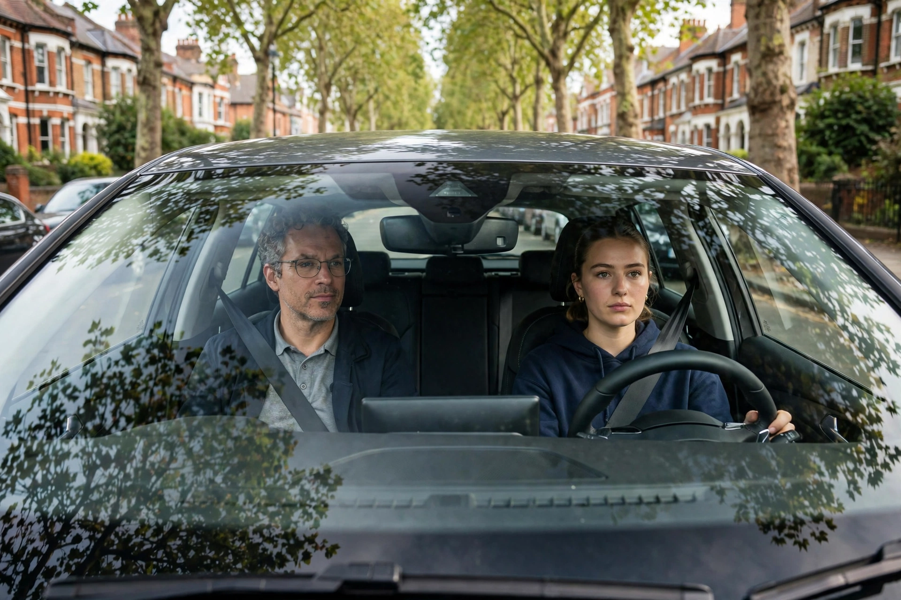
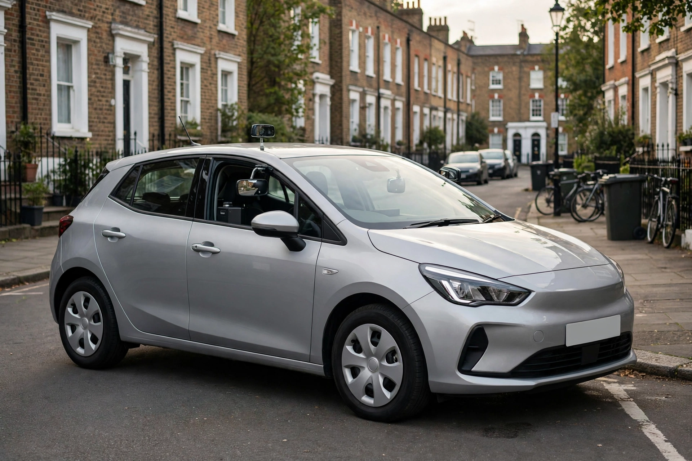
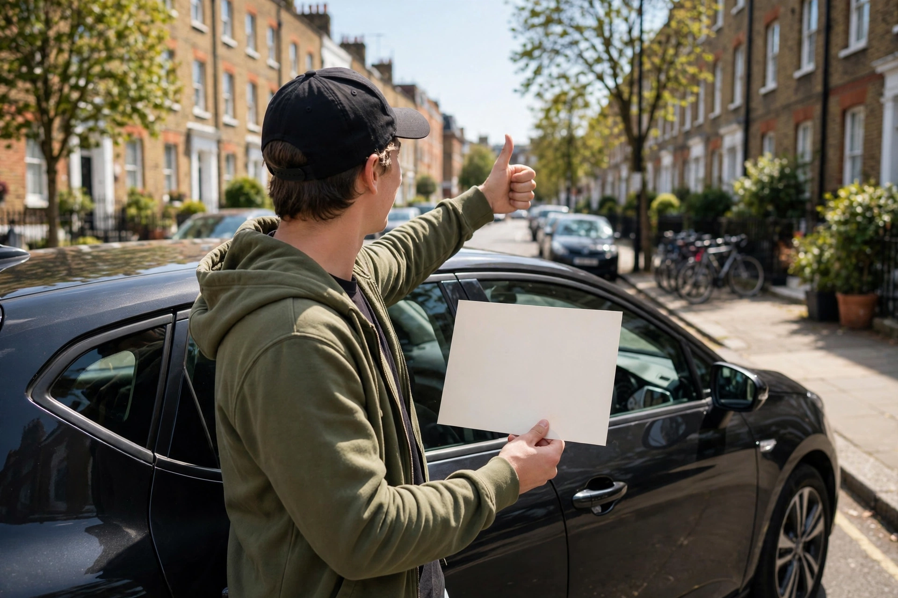

Beginner Lessons
Start from zero with patient, step-by-step tuition that builds real skill and calm habits from day one.
Learn moreDriving school · London N21
Patient, structured driving lessons across North London with a DVSA-approved instructor — from your very first start to test day.

Lessons
Whether you have never sat in the driver's seat or just need your confidence back, there is a lesson plan for you.
Start from zero with patient, step-by-step tuition that builds real skill and calm habits from day one.
Learn moreAlready passed but not driven in a while? Rebuild your confidence on real London roads, at your pace.
Learn more
A focused block of lessons for learners who want to reach test standard on a tighter timeline.
Learn moreHow learning to drive works
Every lesson follows the official DVSA syllabus, so progress is structured rather than left to chance — and the plan adapts to your pace.
Moving off and stopping, cockpit checks and calm control of the car — the basics, done properly from your very first start.
Building through junctions, roundabouts and the set manoeuvres on real North London roads, lesson by lesson.
Independent driving, mock tests and local route practice, so test day feels familiar — then you pass.
Our story
Eye Drive School of Motoring is based in London N21 and teaches where its learners actually live and drive — the residential streets, roundabouts and busier routes of North London, including the roads around local test centres.
Every lesson is one-to-one with a DVSA-approved instructor and follows the official DVSA syllabus, so progress is structured rather than left to chance: first the basics of moving off and stopping, then junctions and manoeuvres, and finally independent driving and test preparation. Whether you are starting from zero, returning after a break, or working to a deadline on an intensive course, the plan adapts to your pace — calm, patient coaching in a dual-control car from your first start to test day.
Beyond the basics
Alongside beginner, refresher and intensive tuition, these sessions polish the skills examiners look for — and the ones you need after you pass.

Full mock tests under exam conditions on local test routes, with honest feedback on exactly what to polish before the real thing.
Learn morePost-test training for newly qualified drivers: motorways, dual carriageways, night driving and all-weather confidence.
Learn moreLessons run across N21 and nearby areas in real conditions — roundabouts, rush hour and residential streets — so test day feels familiar.
Learn moreWhy Eye Drive
Eye Drive School of Motoring is based in London N21 and teaches on the roads you will actually use — including the routes around local test centres.
Gallery preview
The car, the roads and the learning experience around London N21.
Questions
Bookings are taken by phone — call 07836 763 603 to check availability and arrange a time that suits you. You can also email eyedriveschool@gmail.com.
With beginner lessons. You start from zero with the basics — moving off and stopping — then build through junctions, manoeuvres and independent driving at a pace that keeps confidence high, following the DVSA syllabus.
Lessons are one-to-one in a dual-control car, so your instructor can support you while you learn and every lesson stays calm and safe.
Yes. Refresher lessons are designed for licence holders who have not driven for a while or feel nervous in city traffic, rebuilding skills and confidence on familiar local roads first.
Yes — mock tests and test preparation run under exam conditions on local test routes, with feedback on what to polish. Intensive courses are also available if you are working to a tighter timeline. Call for current lesson prices and availability.
Visit & contact